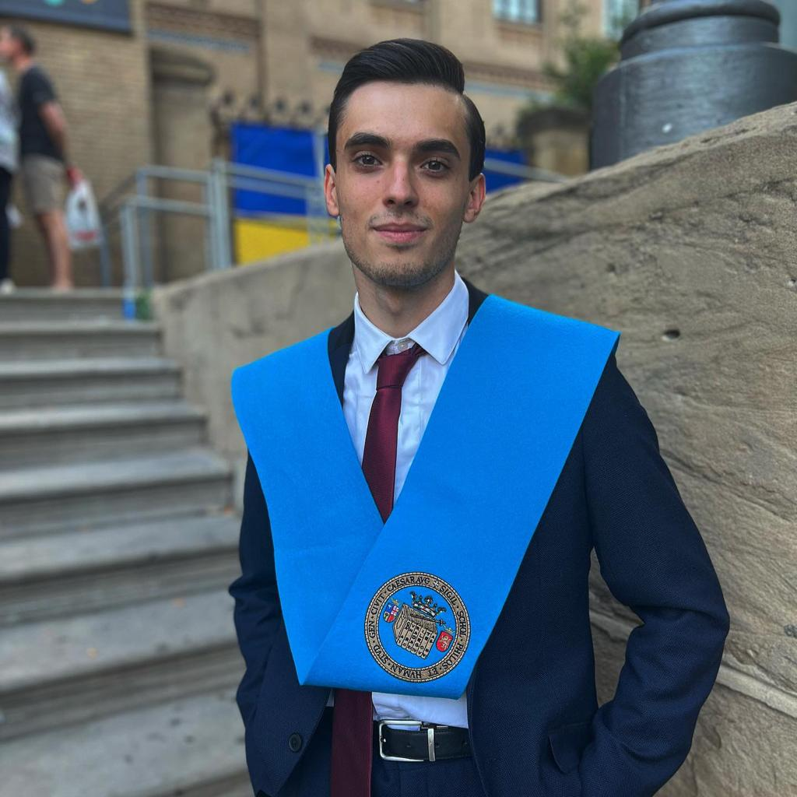

¡Bienvenid@!
Soy Juan Miravete
Programador
Periodista
Atleta
Estudiante de Desarrollo de Aplicaciones Multiplataforma y periodista deportivo y de sociedad.
Me llamo Juan, tengo 24 años y soy periodista, maño y en mis ratos libres atleta.
Me encanta conocer y relatar historias, todas ellas siempre con un toque personal y pasional.
Ahora me dedico a programar bases de datos, codigos CSS y hacer programitas en Java. Me he vuelto un esclavo del ;
¡Ah! Y muy friki de la geopolítica, los mapas y el deporte.
¡Sigue navegando y averigua más sobre mí y mis proyectos!
¿Quieres saber más?
